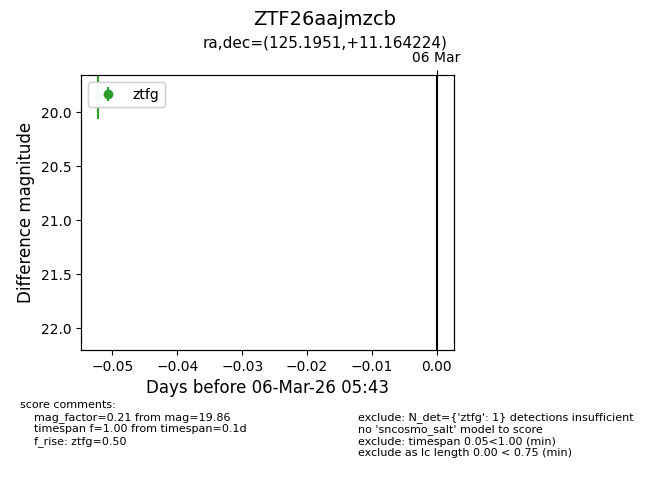
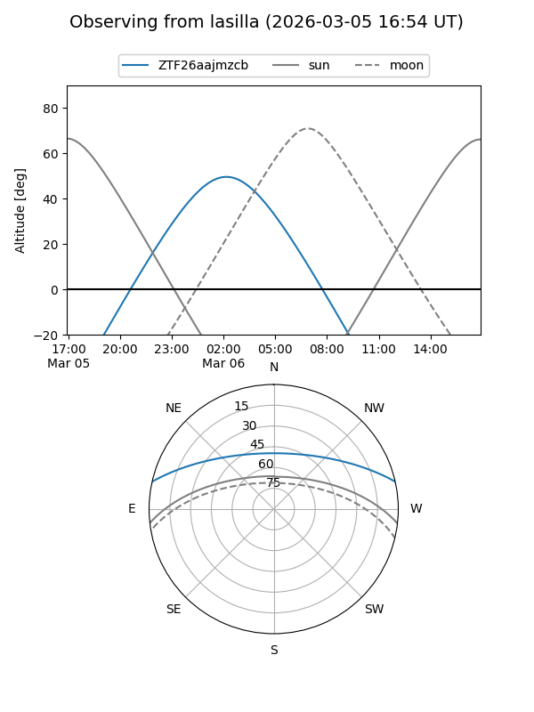
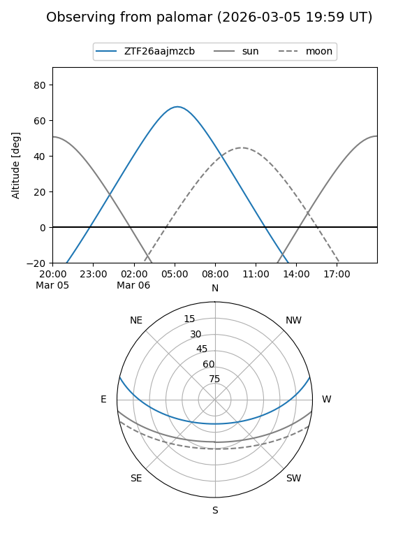

ZTF26aajmzcb
Target ZTF26aajmzcb at 2026-03-06 05:44
Aliases and brokers:
FINK: link
Lasair: link
ALeRCE: link
alt names
ZTF26aajmzcb (ztf,fink_ztf)
Coordinates:
equatorial (ra, dec) = 125.1951,+11.16422
equatorial (HMS+DMS) = 08:20:46.81,+11:09:51.21
galactic (l, b) = (212.7859,+24.84157)
Flags:
Photometry:
last ztfg=19.86
1 ztfg detections
Lightcurve

Visibility


Additional plots